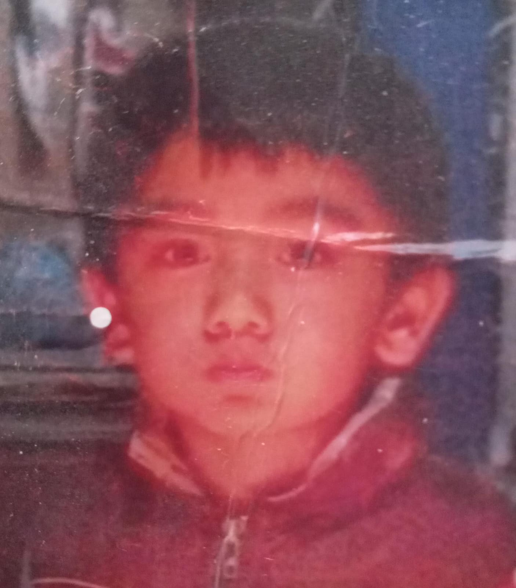

Fabian Cruz Reyes nacido el 8 de marzo del año 2007 en Ecatepec Estado de México, hijo de Angel Hector cCuz Ocampo y María Concepción Reyes Galván, desde su infancia vivió en el mismo sitio en Tequixquiac Centro Estado de México, es el más pequeño de sus cuatro hermanos inicio sus estudios en el kinder Isidro Favela , posteriormente estudio su primaria en la institución Nicolaz Bravo,posterior a eso estudio en la escuela secundaria E.S.T.I.C 0051 profr. Heriberto Enriquez actualmente estudia el nivel medio superior en el CBT Dr. Alfonso León de Garay Tequixquiac, en el cual cursa el cuarto semestre en la carrera técnico en informática, desde que era chico le gusto el dibujo y ha tenido ese interés hasta el dia de hoy.

| ENLACES |
|---|
| INICIO |
| MI FAMILIA |
| MIS AMIGOS |
| MIS HOBIES |